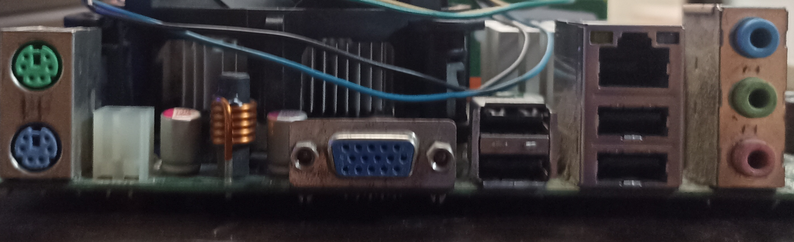
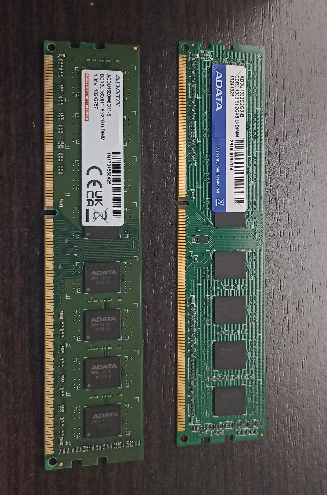
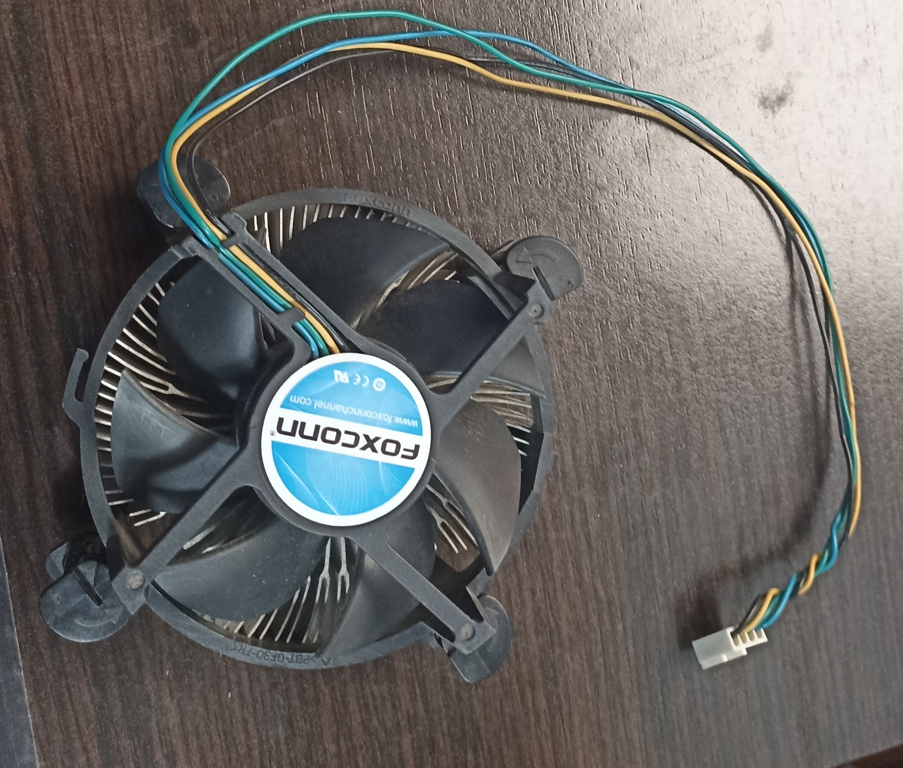

A somewhat old-fashioned motherboard but still retains its potential. The FSB-1333 is an ITX motherboard, perfect for a processor of that class. Bundle with selected CPU running on FSB1333/2.66GHz This motherboard also supports lower CPU specifications: - LGA 775 for Intel Dual Core Core™ 2 Extreme / Core™ 2 Duo / Pentium® D / Pentium® Dual Core / Pentium® 4 / Celeron® / Celeron® D processors - Compatible with all FSB 1333/1066/800/533 MHz processors except Quad Core - Supports Hyper-Threading technology Intel® 945GC A2 Chipset Supports Dual Channel DDR2 667/533 memory x 2 DIMM slots with Maximum capacity up to 4GB Intel® Graphics Media Accelerator 950, DirectX 9.0 and Maximum memory size 224MB 1 x PCI Express x16 slot Hybrid Booster - Safe Overclocking Technology Overclocking Unleashed – During overclocking, FSB enjoys better headroom due to fixed PCIE/PCI buses 4 x SATA2 3.0 Gb/s connectors Audio 7.1 CH Windows® Vista™ Premium Level HD (ALC888 Audio Codec), Ethernet LAN 10/100 Windows® Vista™ Premium 2007 Logo Ready HD 8CH I/O: 4 USB 2.0 ports ready-to-use, 7.1 channel HD Audio Connector |

As we can see in the image, on the right side it has 3 ports for "audio (Green), microphone (Pink) and line input (Blue). 4 USB 2.0 ports and 1 Ethernet port (Jack45), and on the left side we have 1 VGA port and 2 ports for mouse and keyboard (those are no longer sold or are very scarce). |

A Pentium is a low range but can collaborate with school or university tasks, work in office programs, it is a processor that has integrated graphics. This Intel Pentium Dual-Core E5800 processor delivers the processing power you need for multitasking, digital video and audio editing, gaming, and multimedia entertainment. This Socket 775 CPU clocks in at speeds up to 3.2 GHz and features a bus speed of 800 MHz and a 2 MB L2 cache. |

There are 2 DDR3 sticks of ram memory, one of 2GB and the other of 8GB, together they form 10GB. ADATA brand. |

.png)
A power supply that may be basic (generic), but can still give life to the PC. As we can see in the image, all the technical information of the source, it works at 250W which is perfect to give more life to the processor and motherboard. |

A stock heatsink is perfect for processors like the Pentium which is low-end, but this heatsink can dissipate air from the processor very well. |